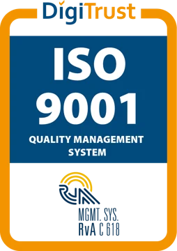

Every decision, from idea to archive
Committee management for UK councils. The report, the sign offs, the agenda pack, the meeting, the minutes and the public record stay together in one file.
Follow your Cabinet meeting from the forward plan to the archive
A decision usually moves through a patchwork of separate tools. Here it stays in one file, and every date below is worked out from the law for your meeting.
Cabinet,
Book a walkthrough for this meetingWe count clear days the cautious way. Only weekdays that aren’t bank holidays in England and Wales count, and never the day of publication or the meeting day (R v Swansea City Council, ex p Elitestone, 1993). Your constitution may count differently. Ask us how your council counts them.
Built for everyone who carries a decision
One platform for the officer drafting the report, the Member voting on it and the resident reading the minutes years later.
Democratic Services
Agendas, reports and minutes come from the same file, so nothing is copied twice. Approval routes are set per document type, with an audit trail behind every step.
Members
Councillors read the papers, take and share notes, sign off and vote in one app, on iOS, Windows and Android, in the chamber or remote.
IT and information governance
Fully web based, one platform in place of several applications, certified to ISO 27001 and ISO 9001. Records stay linked to their topic, so the knowledge stays when people move on.
Over 400 clients across Europe already decide this way
Councils in the Netherlands and France run their decisions on Qualigraf today. These are frontrunners you can learn from.
- Netherlands
 Netherlands
Netherlands Netherlands
Netherlands France
France France
France
Made for each country’s rulesThe platform is tailored to the democratic demands of every country it serves, so UK councils get the UK cycle.
Open to UK early adoptersQualigraf is working with its first UK councils now, and is looking for a few more to help shape it.
ADSO silver sponsorQualigraf supports the Association of Democratic Services Officers as a silver sponsor.
Certified, audited and accounted for
Every step of a decision is logged, who changed what and when, and the platform is independently certified.


- ISO 27001Information security, independently certified
- ISO 9001Quality management, independently certified
- Cyber EssentialsThe UK government backed baseline for cyber security
- A built in audit trailEvery change and every approval on the record
A UK team that knows Democratic Services
Qualigraf UK is run from Stoke-on-Trent, with sister teams in France, the Netherlands and Canada.

Led Civica Modern.Gov in the UK for many years before joining Qualigraf, and became Group CEO in 2026. steven@qualigraf.com

Around 40 years in Democratic Services. Your first call goes to Stuart. 07741 080343
Bring your hardest meeting. We’ll run it on Qualigraf
A walkthrough built around your own Cabinet meeting on , with your deadlines, your approval routes and your Members.
Or call Stuart on 07741 080343